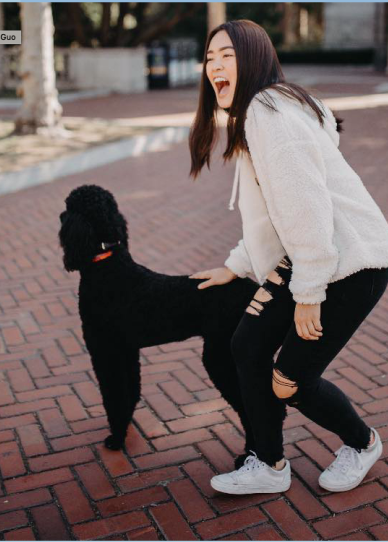
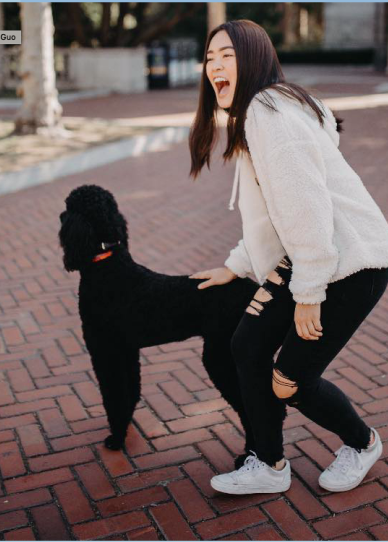

Hey, I’m Joyce, a
student who loves
creating and
storytelling.
As a rising Junior at UC Berkeley, I’ve enjoyed being actively apart of the Board of Engineering Student Council as Co-Technical Director and a member of AFX tech/dance as a web developer and dancer.
Outside of school, I am a Graphic Designer for Girl Genius Magazine.
During my past summers, I attended Girls Who Code, Kode With Klossy, and taught at She STEMs, a camp to empower girls to be confident in tech.
I love to read, meet new friends, and dance! Music has always been a passion of mine. I am also extremely passionate in investing time in learning
new topics, Finding new ways to solve problems, and creating tech to help my community.
Please feel free to contact. Would be lovely to hear from you :D
Joyceguo2001@gmail.com